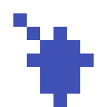
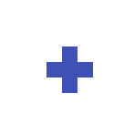
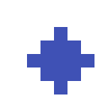

USER MANUAL
Welcome to the user manual for the BrainMapper software.
Welcome to the user manual for the BrainMapper software.
Contents - Calculation
Go back to home pageOne of the fundamental points of this project is to be able to apply several calculations and operations on one or a set of NIfTI files. Those operations can establish statistics between different files (average, linear combinations), or to cross information between different files (intersection, union), to extract information more easily in a file (calculation centers of gravity or entropy) or to apply transformations on a file to improve the quality of the data and to suppress the noise for example (Mathematical Morphologies).
The data contained in the NIfTI files are extracted using the NiBabel library which retrieves the 3D matrix do voxels. Then we store in a table all the voxels whose intensity is strictly positive. We thus succeed in reducing all the voxels considered. This table is a numpy.array of dimension 4 (x, y, z, i) where x, y, z are the coordinates of the voxels in the matrix and i the intensity of the voxel
To optimize the speed of computation, we use the numpy library which makes it possible to reduce by a ratio 100 the execution time of the calculations thanks to a parralelization procedure which makes it possible to distribute the computations to each processor of the computer in question.
To further improve the results we decrease the search space related to the extraction of positive voxels. To be done instead of running a bare course in the 3 dimensiosn that are x, y and z in the dataset of the NIfTI file which would be about 4,000,000 voxels to visit we reduce this to a cube that includes all of them voxels whose intensity is strictly positive. Thus the extraction process becomes much faster. We go from an extraction that lasts more than 2 minutes to an instantaneous extraction of less than half a second
All examples in this part are in 2D whereas all calculations in BrainMapper are in 3D.
The addition algorithm make an addition of all the input images
In the following example, we realize an addition on 3 images. Each value corresponds to the intensity of a point.
[5, 4, 0] [0, 4, 0] [0, 0, 2] [5, 8, 2]
[0, 0, 3] + [0, 7, 4] + [3, 4, 2] = [3, 11, 9]
[1, 1, 2] [3, 0, 0] [0, 1, 2] [4, 2, 2]
The division algorithm adds the intensity of all input images and then divides this value by a coefficient
In the following example, we realize a division by 2 on 3 images. Each value corresponds to the intensity of a point.
[5, 4, 0] [0, 4, 0] [0, 0, 2] [2.5, 4, 1]
([0, 0, 3] + [0, 7, 4] + [3, 4, 2]) / 2 = [1.5, 5.5, 4.5]
[1, 1, 2] [3, 0, 0] [0, 1, 2] [ 2, 1, 1]
The linear combination algorithm adds the intensity of all input images but each image has all its intensity multiplied by a corresponding coefficient.
In the following example, we realize a linear combination on 3 images. Each value corresponds to the intensity of a point.
[5, 4, 0] [0, 4, 0] [0, 0, 2] [10, 20, 4]
[0, 0, 3] *2 + [0, 7, 4] *3 + [3, 4, 2] *2 = [ 6, 29, 22]
[1, 1, 2] [3, 0, 0] [0, 1, 2] [11, 4, 4]
The mean algorithm adds the intensity of all the input images, and then divides this value by the number of images
In the following example, we realize a mean on 3 images. Each value corresponds to the intensity of a point.
[5, 4, 0] [0, 4, 0] [0, 0, 2] [5/3, 8/3, 2/3]
([0, 0, 3] + [0, 7, 4] + [3, 4, 2]) /3 = [ 1, 11/3, 3]
[1, 1, 2] [3, 0, 0] [0, 1, 2] [4/3, 2/3, 2/3]
The multiplication algorithm adds the intensity of all input images and then multiplies this value by a coefficient
In the following example, we realize a multiplication by 2 on 3 images. Each value corresponds to the intensity of a point.
[5, 4, 0] [0, 4, 0] [0, 0, 2] [10, 16, 4]
([0, 0, 3] + [0, 7, 4] + [3, 4, 2]) * 2 = [ 6, 22, 18]
[1, 1, 2] [3, 0, 0] [0, 1, 2] [ 8, 4, 4]
The and algorithm realizes the boolean intersection of the input images. For each voxel in an image, if the intensity is superior to 0, this voxel is considered as true. The result is a unique image where each voxel is the intersection of voxels from the input images.
In the following example, we realize an intersection operation on 2 images. Each value corresponds to the intensity of a point.
[5, 4, 0] [0, 4, 0] [ true, true, false] [false, true, false] [false, true, false]
[0, 0, 3] AND [0, 7, 4] = [false, false, true] AND [false, true, true] = [false, false, true]
[1, 1, 2] [3, 0, 0] [ true, true, true] [ true, false, false] [ true, false, false]
The or algorithm realizes the boolean union of the images in input. For each voxel in an image, if the intensity is superior to 0, this voxel is considered as true. The result is a unique image where each voxel is the union of voxels from the input images
In the following example, we realize an union operation on 2 images. Each value corresponds to the intensity of a point.
[5, 4, 0] [0, 4, 0] [ true, true, false] [false, true, false] [true, true, false]
[0, 0, 3] OR [0, 7, 4] = [false, false, true] OR [false, true, true] = [false, true, true]
[1, 1, 2] [3, 0, 0] [ true, true, true] [ true, false, false] [ true, true, true]
This operation corresponds to a dilatation followed by an erosion.
In the following example, we realize a closing.
Dilation has the effect of increasing the size of the objects, and to merge some of them, when the distance between them is smaller than the size of the structuring element.
In the following example, we realize a dilation.
Erosion has the effect of eliminating objects or parts of objects whose size is smaller than that of the structuring element.
In the following example, we realize an erosion.
Opening is to remove detail smaller than a cross. This operation corresponds to an erosion followed by a dilatation.
In the following example, we realize an opening.
The threshold operation allows you to store only voxels whose intensity value is between the min and max parameters. All voxels that do not meet this criterion have their intensity that becomes zero. If no value is assigned to min and max then their values will be less the infinite and the less infinite respectively.
[5, -4, 0] [ 0, 2, 0] [ 0, 0, 0] [ 0, 2, 0]
Threshold( [0, 0, 2], [ 0, -7, 2] ) = ( [ 0, 0, 2], [ 0, 0, 2] ) avec min = 0 et max = 2
[1, 1, -2] [-3, 0, 1] [ 1, 1, 0] [ 0, 0, 1]
Select one or more image collections in the home view and select the button "Calculate" to access to calculation operations.
Note that you need at least one collection to access the calculation view.
For each algorithm there is a brief description of it to allow the user to know exactly what each algorithm corresponds to. For some algorithm, parameters must be entered and can be modified to allow the user to have more flexibility in the use of these.
In orange, you can algorithms that return a unique image and in pink, algorithms are applied images one after the other.
Once the user has selected a calculation and initialized all the parameters, he can execute it using the "Calculate" button.
If the calculation was successful, a new window appears and the message "Calculation successful" appears in the console.
The new window proposes to save the result of calculation as a set. If you choose to save it as set, select the button "Save". If the back-up is going well, you will have a new message such as "A new set has been created with the name :..." in the console.
If you return in the main view, you can see all calculation saved in the part "Calculation".